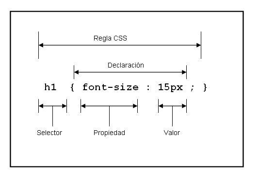

SINTAXIS Y SELECTORES CSS
La sintaxis Se compone de sentencias en las que se establece un atributo de estilo y un valor para el mismo, ambas separadas por el signo de dos puntos “:”. color : red; Estas sentencias se aplican a las etiquetas HTML estableciendo características propias de su aspecto. El selector CSS es el nexo de unión entre la hoja de estilos y los documentos a los que se aplique dicha hoja. Según Gómez, M. R. (2013). HTML, CSS Y JAVASCRIPT son Las hojas de estilo en cascada (CSS, Cascading Style Sheets) es un lenguaje de estilos que define el aspecto, la presentación y la posición que tendrán los diferentes elementos que componen una página web. El protagonismo que ha ido adquiriendo el uso de las hojas de estilo en el mundo del diseño web ha ido creciendo año tras año hasta convertirse en un mecanismo totalmente imprescindible
REFERENCIAS Gómez, M. R. (2013). HTML, CSS Y JAVASCRIPT https://anayamultimedia.es/primer_capitulo/curso-de-desarrollo-web-html-css-y-javascript-edicion-2021.pdf 